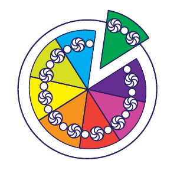
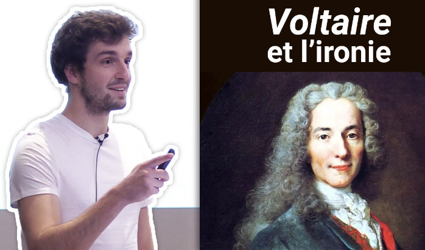
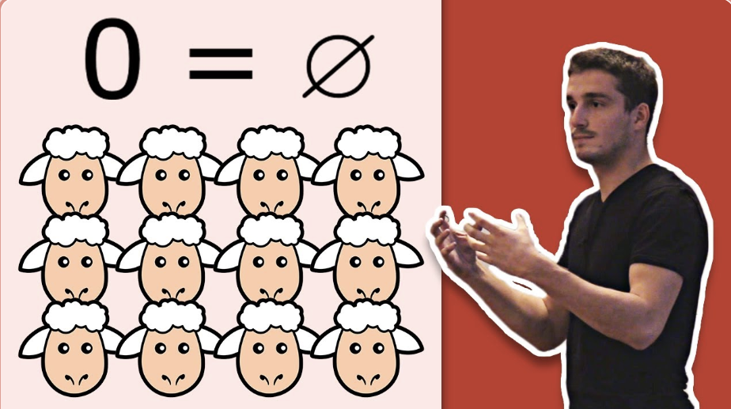

Vadim Lebovici
ENS
- 2020/2023 - S2 - Mathématiques pour littéraires. [page] (in french)
- 2022/2023 - S1 - Reading group - Tame Topology and O-minimal Structures, van den Dries. [planning] (in french)
- 2021/2022 - S1 - Reading group - Characteristic Classes, Milnor, Stasheff. [planning] (in french)
- 2020/2021 - S1 - Reading group - Persistence Theory: from Quiver Representations to Data Analysis, Oudot. [planning] (in french)
Savoirs Pour Tous
 Savoirs Pour Tous is a non-governmental organization (co-founded with L. Willems) that introduces a wide range of academic subjects to secondary school students through problem-based talks, published on YouTube (more than 40 talks).
Talks
|  |
Why would one be ironic?
Literature talk based on Candide, Voltaire. [video] (in french) |
|  |
Counting sheeps
Mathematics talk on von Neumann's construction of the integers. [video] (in french) |
Others
|
|
TEDx talk, 2018, IMT Lille-Douai, with L. Willems.
How to get students interested? [youtube] (in french) |